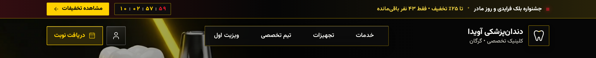
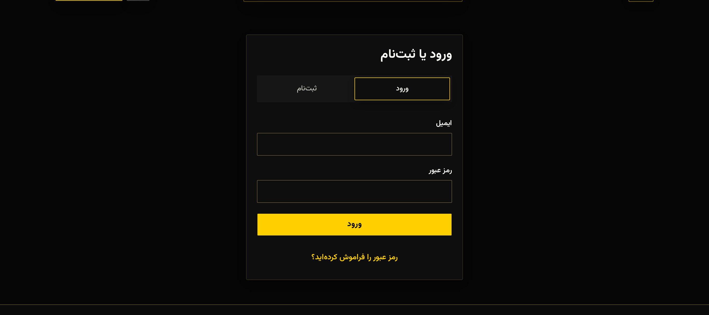
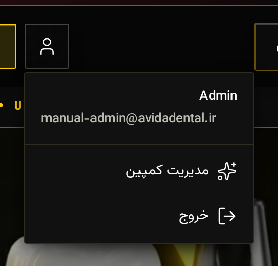
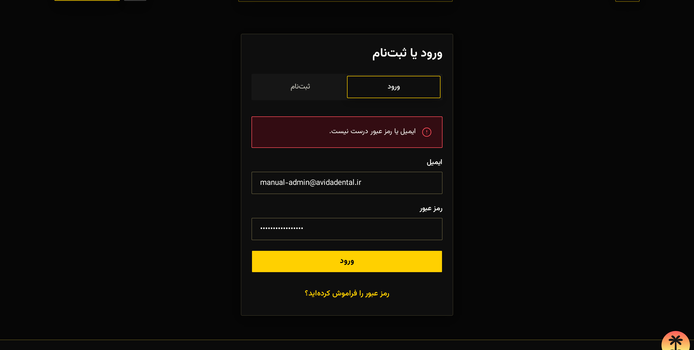

فصل۱
ورود، خروج و دسترسی به پنل مدیریت
ورود به حساب مدیر
ایمیل و رمز عبور حساب مدیر کلینیک را از مسئول فنی سایت دریافت کنید.

نکتهٔ کلیدی
- نشانی
/admin/campaignرا در ادامهٔ آدرس سایت در مرورگر وارد کنید، یا در صفحهٔ اصلی سایت روی دکمهٔ آدمک ورود ۱ در سربرگ بزنید.
اگر پیشتر وارد حساب مدیر شده باشید، نشانی /admin/campaign بدون نمایش فرم ورود، مستقیماً پنل مدیریت کمپین بلک فرایدی و روز مادر را باز میکند.

- مطمئن شوید زبانهٔ ورود ۱ فعال است.
- در کادر ایمیل ۲ نشانی ایمیل مدیر و در کادر رمز عبور ۳ رمز عبور را بنویسید.
- روی دکمهٔ ورود ۴ بزنید.
نکتهٔ کلیدی
دسترسی به پنل از سربرگ سایت
پس از ورود، هر زمان که در صفحههای عمومی سایت (مانند صفحهٔ اصلی یا صفحهٔ جشنواره) باشید، میتوانید بدون تایپ نشانی به پنل مدیریت برگردید.

- روی دکمهٔ آدمک حساب کاربری ۱ در گوشهٔ سمت چپ سربرگ بزنید.
- از فهرست بازشده روی مدیریت کمپین ۲ بزنید تا پنل مدیریت باز شود.
بازیابی رمز عبور
اگر رمز عبور حساب مدیر را فراموش کردهاید، از پیوند رمز عبور را فراموش کردهاید؟ ۶ در پایین فرم ورود استفاده کنید.
- در صفحهٔ بازشده ایمیل حساب مدیر را بنویسید و درخواست بازیابی را ثبت کنید.
- پیوند ارسالشده به ایمیل را باز کنید و رمز عبور تازه بگذارید.
خروج ایمن از حساب کاربری
نکتهٔ کلیدی
- روی دکمهٔ حساب کاربری ۱ بزنید.
- گزینهٔ خروج ۳ را انتخاب کنید؛ بلافاصله به حالت بازدیدکنندهٔ عادی برمیگردید.
رفع مشکل

| آنچه میبینید | چه باید کرد |
|---|---|
| پیام ایمیل یا رمز عبور درست نیست. ۱ | زبان صفحهکلید را روی انگلیسی قرار دهید و ایمیل و رمز عبور را دوباره وارد کنید. سایت برای امنیت بیشتر مشخص نمیکند کدام فیلد نادرست است. |
| پیام ایمیل این حساب هنوز تأیید نشده است. پیوند تأیید تازهای به ایمیل شما فرستادیم. | صندوق ایمیل (و پوشهٔ هرزنامه) را باز کنید و روی پیوند تأیید بزنید؛ سپس دوباره وارد شوید. |
| پس از ورود به صفحهٔ اصلی برمیگردید و گزینهٔ مدیریت کمپین در فهرست حساب نیست. | حسابی که با آن وارد شدهاید نقش مدیر ندارد؛ با حساب مدیر کلینیک وارد شوید یا از مسئول فنی بخواهید دسترسی مدیر را فعال کند. |
| پس از چند بار تلاش پیاپی، ورود برای مدتی پذیرفته نمیشود. | یک دقیقه صبر کنید و دوباره تلاش کنید؛ سامانه برای جلوگیری از حدس رمز عبور، درخواستهای پیاپی را بهطور موقت محدود میکند. |